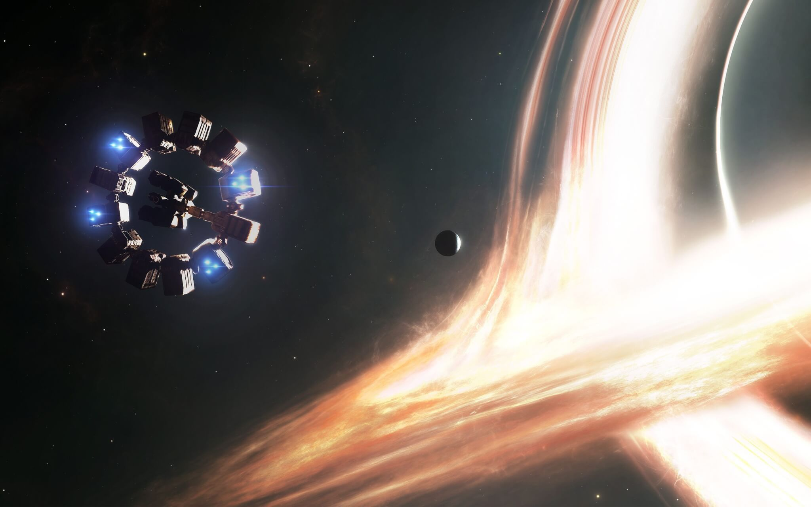

Interestellar (bra/prt: Interestelar) é um filme anglo-americano de ficção científica dirigido por Christopher Nolan e estrelado por Matthew McConaughey, Anne Hathaway, Jessica Chastain, Bill Irwin, Mackenzie Foy, Matt Damon, John Lithgow e Michael Caine. Ele conta a história de uma equipe de astronautas que viaja através de um buraco de minhoca à procura de um novo lar para a humanidade. Os irmãos Christopher e Jonathan Nolan escreveram o filme unindo ideias do primeiro com um roteiro que o segundo havia escrito em 2007. Nolan foi o produtor junto com sua esposa Emma Thomas e com Lynda Obst. O físico teórico Kip Thorne, cujo trabalho inspirou o filme, trabalhou como consultor científico e como produtor executivo.
O projeto foi co-financiado pela Paramount Pictures, Warner Bros. e Legendary Pictures, enquanto que a Syncopy Films e a Lynda Obst Productions serviram como as companhias produtoras. Nolan contratou o diretor de fotografia Hoyte van Hoytema e filmou Interstellar no formato anamórfico 35 mm e também IMAX 70 mm. As filmagens começaram no final de 2013 e passaram por Alberta, Canadá, pela Islândia e Los Angeles. O filme utiliza muitos efeitos especiais práticos e de miniatura, com a empresa Double Negative criando os efeitos visuais.
O filme recebeu 5 indicações à 87ª edição do Academy Awards (Oscar 2015), nas categorias de Melhores Efeitos Visuais, Melhor Trilha Sonora, Melhor Edição de Som, Melhor Mixagem de Som e Melhor Direção de Arte, tendo vencido na categoria de Melhores Efeitos Visuais na cerimônia de entrega do Oscar ocorrida no dia 22 de fevereiro.Foi o filme mais pirateado em 2015, com cerca de 46,7 milhões de downloads ilegais.
Sinópse

Pragas nas colheitas fizeram a civilização humana regredir para uma sociedade agrária em futuro de data desconhecida. Cooper, ex-piloto da NASA, tem uma fazenda com sua família. Murphy, a filha de dez anos de Cooper, acredita que seu quarto está assombrado por um fantasma que tenta se comunicar com ela. Pai e filha descobrem que o "fantasma" é uma inteligência desconhecida que está enviando mensagens codificadas através de radiação gravitacional, deixando coordenadas em binário que os levam até uma instalação secreta da NASA liderada pelo professor John Brand. O cientista revela que um buraco de minhoca foi aberto perto de Saturno e que ele leva a planetas que podem oferecer condições de sobrevivência para a espécie humana. As "missões Lázaro" enviadas anos antes identificaram três planetas potencialmente habitáveis orbitando o buraco negro Gargântua: Miller, Edmunds e Mann - nomeados em homenagem aos astronautas que os pesquisaram. Brand recruta Cooper para pilotar a nave espacial Endurance e recuperar os dados dos astronautas; se um dos planetas se mostrar habitável, a humanidade irá seguir para ele na instalação da NASA, que é na realidade uma enorme estação espacial. A partida de Cooper devasta Murphy.
Além de Cooper, a tripulação da Endurance é formada pela bióloga Amelia, filha de Brand; o cientista Romilly, o físico planetário Doyle, além dos robôs TARS e CASE. Eles entram no buraco de minhoca e se dirigem a Miller, porém descobrem que o planeta possui enorme dilatação gravitacional temporal por estar tão perto de Gargântua: cada hora na superfície equivale a sete anos na Terra. Eles entram em Miller e descobrem que é inóspito já que é coberto por um oceano raso e agitado por ondas enormes. Uma onda atinge a tripulação enquanto Amelia tenta recuperar os dados de Miller, matando Doyle e atrasando a partida. Ao voltarem para a Endurance, Cooper e Amelia descobrem que 23 anos se passaram.
Na Terra, Murphy, agora adulta, trabalha como cientista da NASA ajudando Brand na equação que permitirá o lançamento de uma enorme estação espacial usando a gravidade. Brand admite em seu leito de morte que já resolveu o problema e determinou que é impossível; ele escondeu a verdade para manter a esperança ainda viva e colocar sua fé no "Plano B": usar óvulos fertilizados a bordo da Endurance para recomeçar a espécie humana. Porém Murphy conclui que a equação pode funcionar com os dados adicionais da singularidade de um buraco negro.
A Endurance está com pouco combustível e é capaz de visitar apenas mais um planeta antes de voltar para a Terra. Eles selecionam Mann depois de uma votação tensa, por ser o único ainda transmitindo. Entretanto, eles descobrem que o planeta é gelado e inóspito; Mann sempre soube que o Plano B era o verdadeiro objetivo da missão e falsificou os dados sobre a viabilidade de seu mundo para que a Endurance o resgatasse. Ele quebra o visor do capacete de Cooper e o deixa para morrer, indo para a Endurance numa nave auxliar. Romilly é morto por uma bomba armada secretamente por Mann a fim de proteger seu segredo. Amelia resgata Cooper em outra nave auxiliar. Mann atraca de forma incorreta na nave espacial e é morto numa explosão que também danifica a Endurance, porém Cooper usa sua nave auxiliar para controlá-la.
Quase sem combustível, Cooper e Amelia planejam catapultar a Endurance ao redor de Gargântua numa rota para Edmunds. TARS e Cooper se jogam no buraco negro se sacrificando para coletar os dados da singularidade e ajudar Amelia reduzindo a massa da nave espacial. Eles emergem em um "tesserato" extradimensional, onde o tempo é mostrado como dimensão espacial enquanto portais mostram pequenos momentos do quarto de infância de Murphy. Cooper raciocina que os supostos alienígenas que criaram o buraco de minhoca são na verdade humanos avançados que dominaram outras dimensões e construíram esse espaço para que ele pudesse se comunicar com a filha e salvar a humanidade. Cooper percebe que o "fantasma" de Murphy, na realidade, era ele mesmo, num período temporal mais avançado. De novo usando radiação gravitacional, passa os dados da singularidade coletados por TARS para o relógio de pulso de Murphy, que, adulta, também entende que o "fantasma" era o pai, comunicando-se com ela através da dimensão temporal, para que ela solucione a equação de Brand e lance a estação espacial da NASA, permitindo assim, evacuar a Terra.
Cooper acorda décadas depois numa estação espacial da NASA, um cilindro de O'Neill que orbita Saturno e serve de base para a humanidade viajar pelo buraco de minhoca. Cooper que envelheceu apenas alguns anos, devido à relatividade temporal, reencontra Murphy, já mulher idosa, que havia liderado a espécie em seu êxodo. Ela convence o pai a viajar para reencontrar Amelia, que começou a preparação de Edmunds, descobrindo ser habitável para a humanidade. Cooper se reúne com TARS, que também foi salvo, e os dois roubam uma nave da NASA e partem para Edmunds.
Bilheteria

Interestellar O filme foi um grande sucesso nas bilheterias e recebeu críticas bastante positivas, que salientaram a precisão científica, trilha sonora, efeitos visuais e as atuações de McConaughey, Hathaway, Chastain e Foy.
Crítica
 François Truffaut: Crítico Cinematográfico
François Truffaut: Crítico Cinematográfico
Interestelar é o filme mais ambicioso de Christopher Nolan. E olha que estamos falando do cara que fez a trilogia do O Cavaleiro das Trevas e A Origem. Em seu novo projeto, o diretor decidiu realizar um longa sobre o homem, abordando sua natureza devastadora, mas também exploradora e empreendedora. Fã de 2001 - Uma Odisséia no Espaço, Nolan faz uma homenagem ao cinema de Stanley Kubrick e à obra de Arthur C. Clarke, mas o espectador deve evitar entrar em maiores comparações entre as produções, afinal estamos falando de um dos maiores clássicos da história da ficção científica. Interestelar é um filme que merece escrever sua própria história, sem ficar sofrendo com comparações inadequadas.Por outro lado, é difícil não lembrar de Kubrick diante da visão de futuro criada por Chris Nolan e pelo irmão Jonathan Nolan. Pode-se dizer até que o futuro de Nolan aqui é mais ambicioso do que o visto.